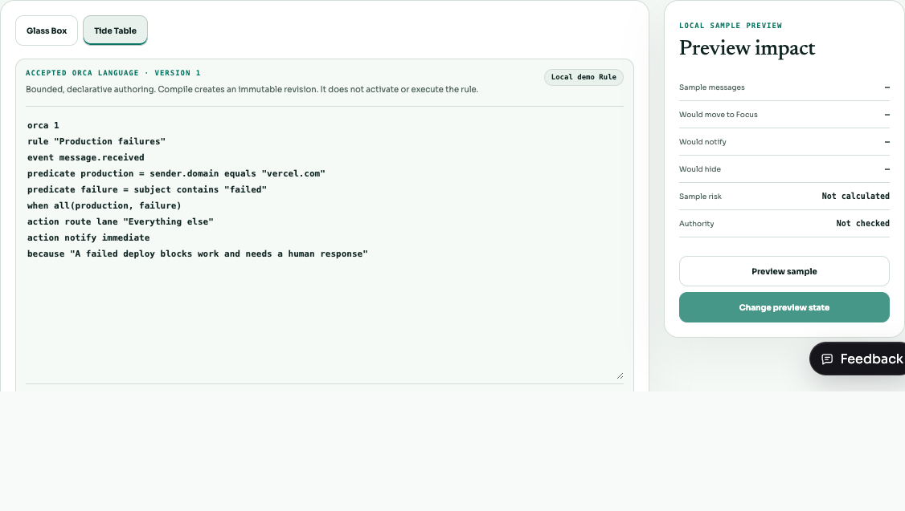
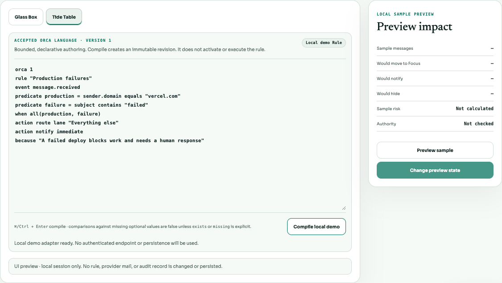
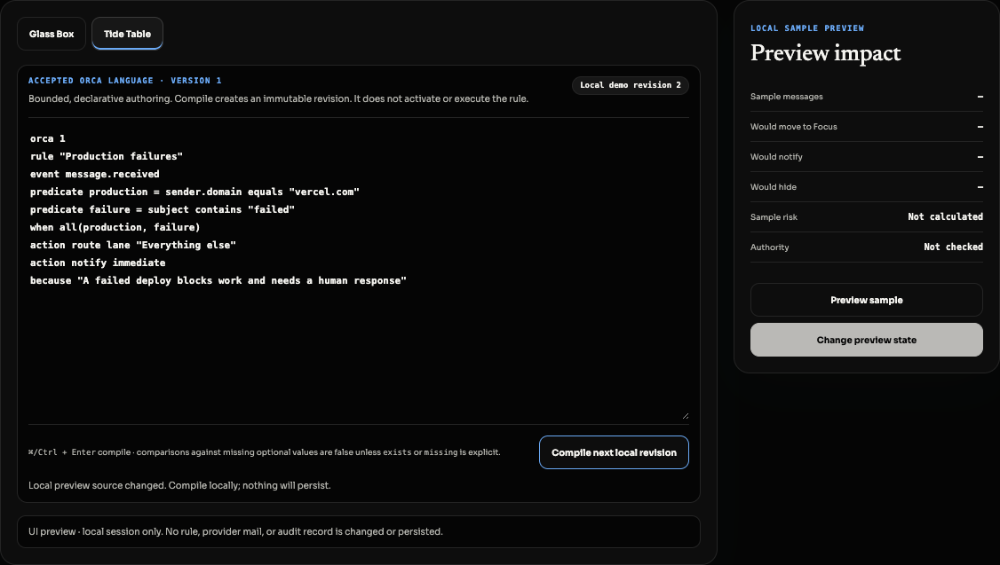
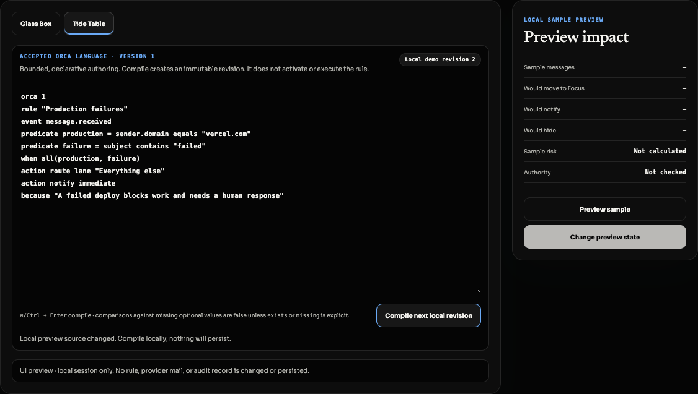

An edit stays available while a compile is pending. A second click queues that source generation; it cannot start until the delayed create returns the stable Rule ID and revision.
Evidence boundary
/dev/inbox?destination=organization is a demo-only visual route. Its Tide Table uses a deterministic local adapter, never calls authenticated /describe or /rules/compile, and never persists. The screenshots below prove layout, interaction, theme, focus, disabled, and diagnostic states only. Authenticated persistence is verified separately through the real request seam and API suites.
Outcome
One serialized intent from source to acknowledgement
Source generationImmutable snapshot
→DescribeWorkspace revision
→Serialize onceBody + key + Rule anchor
→Exact retryUnknown outcomes replay bytes
→Canonical refreshViews + Lanes rebind
Network loss and parseable 5xx responses retain the exact serialized body, idempotency key, old Workspace revision, source, and Rule anchor until a definitive answer.
The interactive demo uses an injected local adapter. It stays visually useful without authenticated requests, writes, audit history, or provider effects.
OrganizationStudio owns one monotonic invalidation seam. Rule, View, and Lane successes reload both siblings; request generations reject late stale responses.
Every image was recaptured from the actual demo route on 2026-08-26 and visually inspected. None is presented as persistence evidence.
No activation, evaluator, provider deletion, arbitrary code, shell, filesystem, or general network authority was added.
Demo-only visual evidence
Light · default, selected, focus, disabled, diagnostic

Default + selectedTide Table stays labeled with the theme-safe surface, border, and ink treatment.

Keyboard focusThe compile control has a visible focus ring and readable label.

Disabled / compilingThe in-flight operation remains named; source geometry and local-only status stay visible.

Located diagnosticLocal demo diagnostic only. Source remains editable and exposes line and column.
Demo-only visual evidence
Orca Black · default, hover, disabled, diagnostic, focus

Default + selectedPure black and graphite replace the invalid prior capture; labels remain warm white.

HoverThe surface change does not shift layout or erase the action label.

Disabled / compilingMuted graphite remains legible and explicitly names the operation.

Diagnostic + hoverThe diagnostic location, message, and hint remain distinct on black.
Diagnostic + keyboard focusA separate capture proves focus rather than reusing hover provenance.
Authenticated persistence
Verification uses real public request seams
| Concern | Evidence |
|---|---|
| Delayed create + edit + second click | tide-table.test.tsx delays compile one, edits, queues click two, and proves request two appends to the Rule ID/revision returned by request one. Stale success never labels newer source compiled. |
| Unknown outcomes | tide-table.test.tsx separately injects network loss and a parseable 503. Each retry uses the byte-equivalent body with the same key and old Workspace revision; describe is not called again. |
| Preview isolation | desktop-switch.interaction.test.tsx renders the full preview, compiles locally, and proves global fetch receives zero requests. |
| Sibling revision coherence | desktop-switch.interaction.test.tsx compiles at r7, reorders a View at r8, mutates a Lane at r9, reaches r10 without reload/409, and ignores delayed pre-compile reads. |
| API persistence + authority | rules/routes.test.ts, rules/service.test.ts, and rules/migration.test.ts cover authenticated replay, append-only revisions, transactional authority, conflicts, rollback, and immutable storage. |
Reviewer paths
Visual and persistence checks are separate
# Demo-only visual route — never persistence evidence bun run dev:web open http://localhost:5173/dev/inbox?destination=organization # Automated authenticated/request validation bun test apps/web/src/tide-table.test.tsx apps/web/src/desktop-switch.interaction.test.tsx bun test apps/api/src/organization/rules # Authenticated manual persistence route — requires a real signed-in session bun run dev open http://localhost:5173/?destination=organization # Compile, then mutate a View and Lane without reloading; confirm no 409.
Scope gate
This compiler produces declarative typed evidence only. Activation, production simulation, evaluation, conflict resolution, and general-purpose execution remain outside BRE-314.